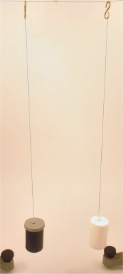

Oscilatori mecanici cuplaţi
B.1. |
|
Oscilatori mecanici cuplaţi |
Interacţiunile dintre un oscilator şi mediul său conduc, inevitabil, la amortizarea oscilaţiilor prin disiparea energiei de oscilaţie. Dar mediul unui
sistem oscilator ar putea transfera energie oscilatorului, provocând, în anumite condiţii, chiar o amplificare a oscilaţiilor acestuia!
 Activitatea experimentală 1B1−1
Activitatea experimentală 1B1−1
Investighează transferul de energie dintre un oscilator şi mediul său. Lucrează în echipă.
Pasul 1 Confecţionaţi un cârlig (dintr−o agrafă de birou) şi ataşaţi−l la capătul liber al pendulului gravitaţional
pe care l−aţi construit la activitatea experimentală 1A1−1. Cârligul vă va permite să agăţaţi uşor pendulul, iar prin înfăşurarea firului pe
cârlig, veţi putea modifica lungimea pendulului.
Confecţionaţi încă un pendul, tot atât de lung. Puneţi câte două monezi în fiecare.
Pasul 2 Prindeţi un fir de aţă subţire, dar tare, între doi suporţi, la aproximativ o jumătate de metru unul de celălalt. Atârnaţi
cele două pendule la aproximativ 10 cm unul de celălalt, în zona centrală a firului orizontal (figura 1B1−1).
|  |
Fig. 1B1-1. Atârnarea pendulelor.
|
Asiguraţi−vă că pendulele au aceeaşi lungime (mai înfăşuraţi aţa pe cârligul pendulului mai lung).
Pasul 3 Puneţi în oscilaţie unul dintre pendule (să−l numim A), pe o direcţie perpendiculară pe firul orizontal. Observaţi
ce se întâmplă.
În timp ce pendulul A oscilează, celălalt pendul (să−l numim B) începe să oscileze, din ce în ce mai amplu!
Totodată, amplitudinea de oscilaţie a pendulului A scade mult mai repede decât ar justifica−o amortizarea. După doar câteva oscilaţii,
pendulul A se opreşte, în timp ce pendulul B oscilează amplu!
În continuare, se întâmplă ceva surprinzător: după ce s−a oprit, pendulul A reîncepe să oscileze, în timp ce pendulul B oscilează din
ce în ce mai puţin amplu!
După doar câteva oscilaţii, pendulul B se opreşte, în timp ce pendulul A oscilează din nou (aproape) ca la început!
Procesul se repetă periodic, pendulele transferându−şi reciproc toată energia de oscilaţie, când într−un sens, când în celălalt.
Iată că între doi oscilatori se poate transfera energie, într−un sens sau în celălalt.
 Numim oscilatori cuplaţi oscilatorii care pot transfera energie de la unul la celălalt.
Numim oscilatori cuplaţi oscilatorii care pot transfera energie de la unul la celălalt.
Cele două pendule sunt cuplate. Firul orizontal de care ai agăţat cele două pendule nu este rigid. Când unul dintre pendule oscilează, punctul său de
suspensie se mişcă pe o direcţie perpendiculară pe fir, odată cu pendulul. Aceste perturbări transversale ale poziţiei punctului de suspensie se transmit,
prin firul întins, şi locului în care este suspendat celălalt pendul, punând−ul în mişcare.
Chiar dacă deformările firului orizontal care cuplează cele două pendule sunt aproape imperceptibile, pe această cale poate fi transferată integral
energia de oscilaţie de la un pendul la celălalt.
Este o lecţie importantă pe care trebuie să o înveţe toţi cei care construiesc structuri. Oscilaţiile unei părţi a structurii se pot transfera întregii
structuri, chiar prin deformări aproape imperceptibile ale elementelor de legătură!
Activitatea experimentală 1B1−2
Mută pendulul B mai aproape de unul dintre suporţi, mărind astfel distanţa dintre pendule.
Pune din nou în oscilaţie pendulul A şi observă ce se întâmplă.
Pendulul B fiind acum mai aproape de unul dintre suporţi, cu siguranţă punctul său de suspensie se va deplasa mai puţin. În consecinţă, forţele la
care este supus pendulul B prin înclinarea firului de care este atârnat, vor fi mai mici şi vor efectua lucru mecanic mai mic.
Astfel, pendulul B preia mai puţină energie de la pendulul A, care nu se opreşte din oscilaţie (doar îşi micşorează puţin amplitudinea cu
care oscilează).
În acest caz, cuplajul dintre cei doi oscilatori este mai slab şi nu permite transferul integral al energiei de oscilaţie de la pendulul A la
celălalt.
Când nu dorim ca oscilaţiile unei părţi a unei structuri să se transmită altor părţi ale acesteia, căutăm să slăbim cuplajul dintre părţi.
Activitatea experimentală 1B1−3
Pune în oscilaţie pendulul A pe o direcţie paralelă cu firul orizontal, pendulul B fiind în repaus.
Observă ce se întâmplă.
De data aceasta, transferul de energie către pendulul B este aproape inexistent! Acelaşi cuplaj se poate dovedi tare pentru un mod de oscilaţie şi
slab (aproape nul) pentru alt mod de oscilaţie!
Cuplajele dintre oscilatori pot favoriza transmiterea unui mod de oscilaţie în defavoarea altuia.
Cei care construiesc structuri pot folosi astfel acelaşi cuplaj pentru a transmite restului structurii oscilaţiile care doresc să se răspândească, blocându−le
pe cele nedorite. Cuplajele dintre oscilatori pot acţiona astfel ca filtre.
 Provocarea 1B1−1
Provocarea 1B1−1
Ce te aştepţi să se întâmple dacă pui simultan în oscilaţie pendulul A pe o direcţie perpendiculară pe firul orizontal, iar pendulul B
pe o direcţie paralelă cu firul orizontal? Încearcă!